We will Embark on a journey from Peshawar to Nathia Gali, where each destination offers an unforgettable chapter in the book of our adventures.
So we have started our journey from Peshawar, the vibrant capital of Khyber Pakhtunkhwa, at 7am. The weather was very beautiful. there were clouds in the sky. We have continued our journey through M1 Motorway. The roads were very wide clean and beautiful and the views were very eye catching. In the middle of M1 Motorway we turned to Hazara Motorway which leads to Abbottabad.
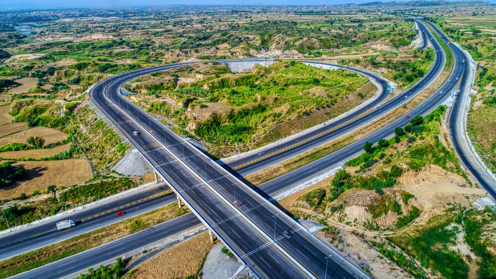 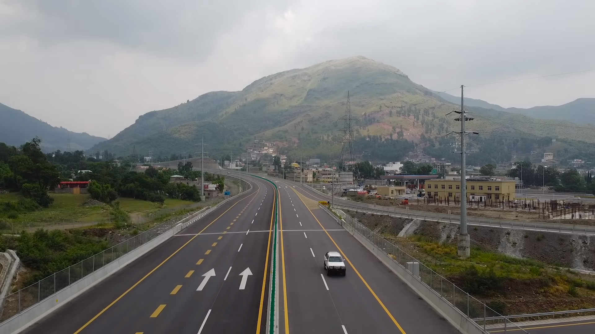After 1 hour and 45 mins we have reached to Abbottabad.Abbottabad, a charming city in Pakistan, is renowned for its idyllic setting amid the Himalayan foothills, with lush green landscapes and a cool, refreshing climate. It serves as a gateway to several nearby hill stations and is a hub for outdoor enthusiasts, offering trekking and adventure opportunities. Notably, Abbottabad gained international prominence as the site of the 2011 raid that led to the capture and killing of Osama bin Laden.
 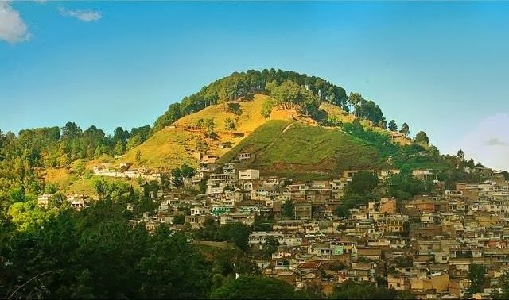
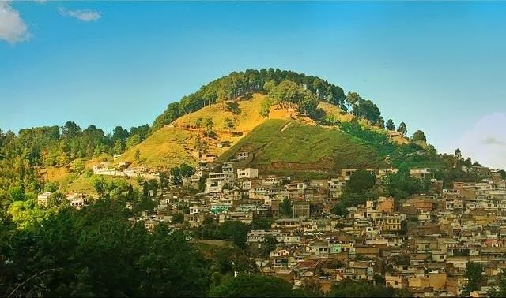
While reaching Abbottabad we have decided to stay for sometime in Harnoi. Harnoi is a serene village near Abbottabad, celebrated for its natural beauty, including lush forests and glistening streams, making it an ideal destination for those seeking tranquility and outdoor escapades.
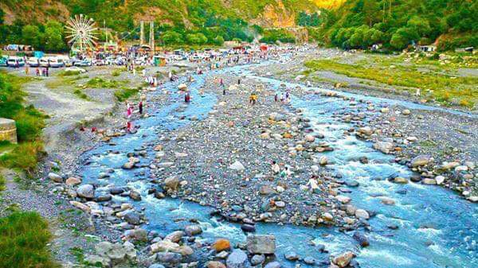 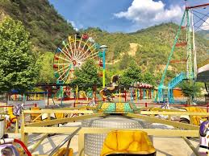After departing from Harnoi we have started to travel at the hilly roads of Nathia Gali. The scenes were very beautiful and we enjoyed alot. After that we have reached to Nathia Gali. The weather was very cold and the clouds were very near to us. we have booked our room.Nathia Gali is nestled in the Galyat range, dense pine forests, and pristine hiking trails, offering a serene escape into nature's embrace. A paradise for trekkers, it provides stunning panoramic views of the surrounding valleys and peaks.
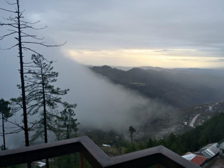 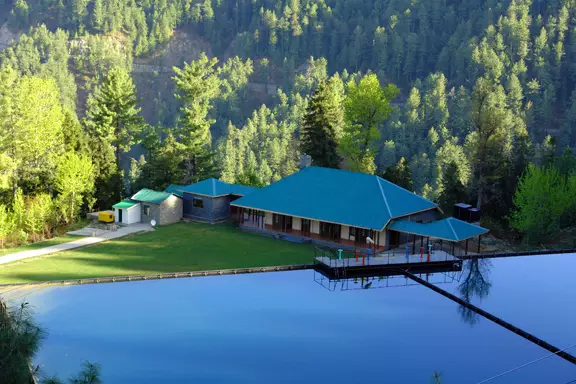In Nathia Gali there are some of the places to visit, so we have decided to visit these places. first of all we went to Plaza park. It is very famous park in Nathia Gali. We have hiked through the stairs which were leading to Plaza park. Then we went to see the church. After that we went to see the KP Governor house.
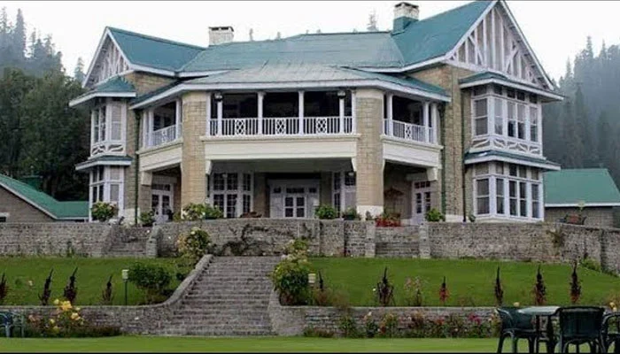 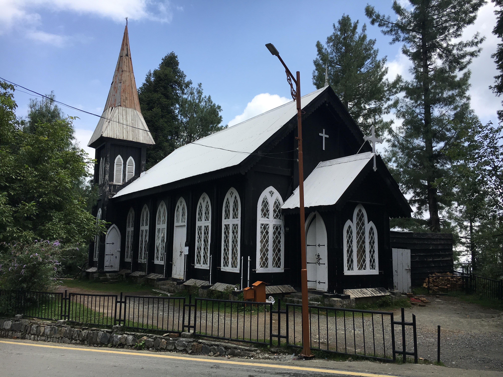On next day we went to Mushkpuri Top, the second-highest peak in the Galyat range of Pakistan, offers a challenging yet rewarding trek through pine forests and lush meadows. At the summit, hikers are greeted with breathtaking views of the surrounding hills, including Miranjani and Nathia Gali. The lush green expanse and serene ambiance make it a popular destination for trekkers and nature enthusiasts. Don't miss the opportunity to witness a stunning sunrise or sunset from this vantage point.
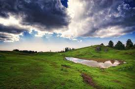 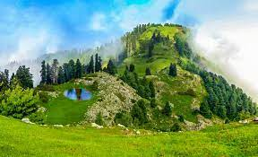After returning from Mushkpuri Top we were very tired so we have slept. And on the next day we came to your homes.This trip was very beautiful and i will remember this trip through out my life.